At Banshiwale, we believe jewellery is more than an accessory—it's a reflection of individuality, emotion, and timeless elegance. Every piece is thoughtfully crafted using premium sterling silver to celebrate life's everyday moments and unforgettable milestones.
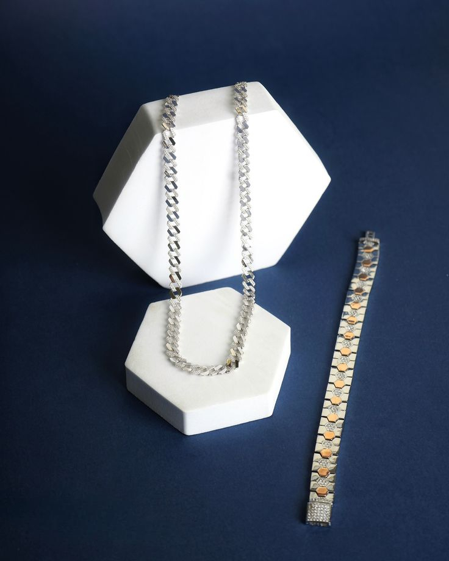
Banshiwale was founded with a simple vision—to create sterling silver jewellery that feels timeless, meaningful, and effortless. We believe every piece should tell a story, celebrate individuality, and become a cherished part of everyday life.
Our collections blend modern elegance with traditional craftsmanship, resulting in jewellery that is refined, versatile, and designed to be worn for years. From delicate everyday essentials to statement pieces, every creation reflects attention to detail and uncompromising quality.
At the heart of banshiwale is a commitment to authenticity. We carefully select premium materials, work with skilled artisans, and ensure every design embodies sophistication without sacrificing comfort. Our goal is to create jewellery that becomes part of your story—marking milestones, celebrating memories, and expressing personal style.
Premium Sterling Silver
Crafted With Care
Elegant Designs
Customer Experience
Every Banshiwale piece reflects our commitment to craftsmanship, authenticity, and creating jewellery that lasts beyond trends.
Crafted using premium sterling silver with uncompromising quality and attention to detail.
Every design is thoughtfully created to balance elegance, durability, and timeless appeal.
Every piece undergoes careful inspection before it reaches your hands.
Building lasting relationships through trust, care, and exceptional service.
From a single spark of inspiration to the piece resting in your hands, every Banshiwale creation passes through unhurried stages of craftsmanship — where design, fire, and precision come together to make something meant to last.
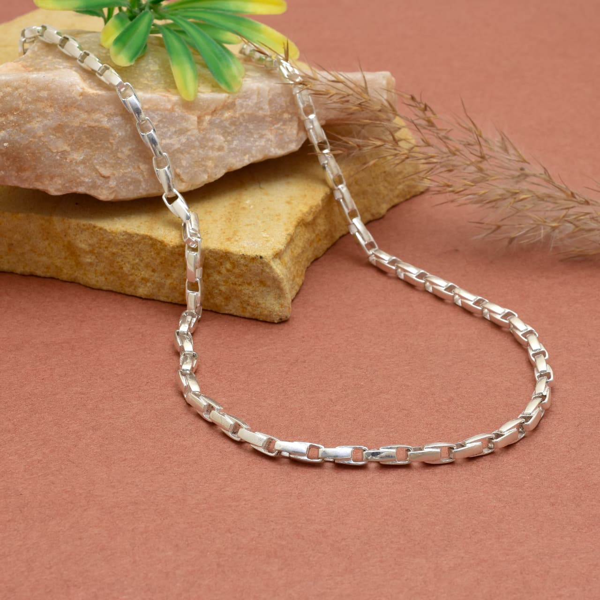
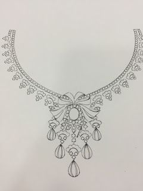
01 — CAD Designing
Every design starts as a pencil line, not a mouse click. Once the sketch holds up, it moves into CAD, where our designers work the curves and clearances down to a tenth of a millimetre — long before any silver gets involved.
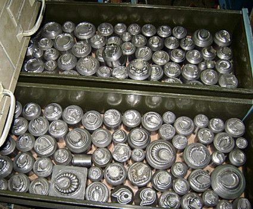
02 — Die & Mould Making
A master die is cut from hardened steel, tooth by tooth, until it matches the design exactly. It's this one die that lets us reproduce the same piece a hundred times over without the tenth copy looking any different from the first.
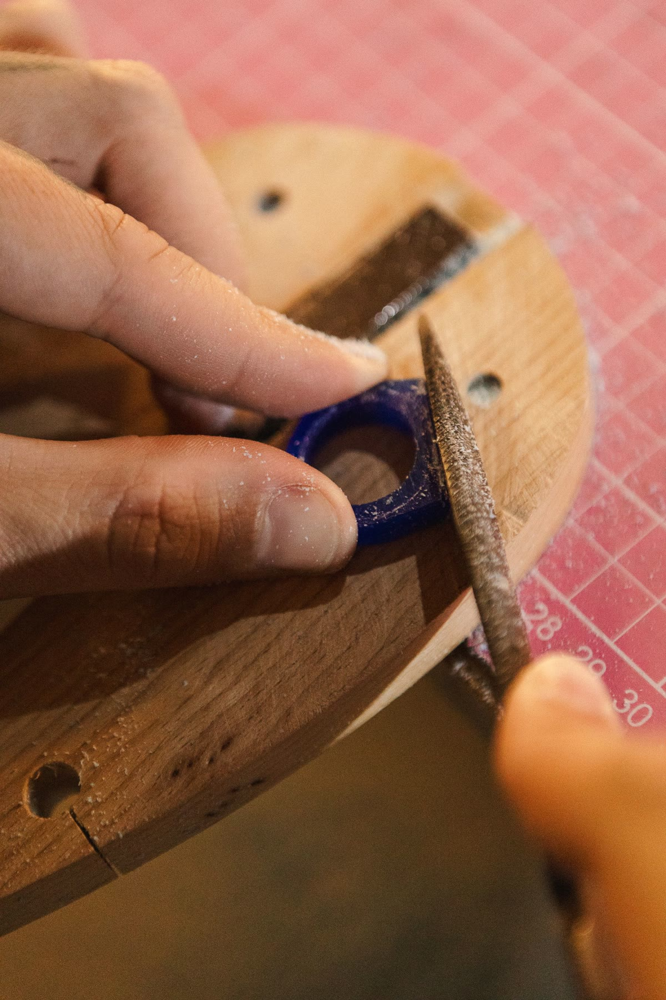
03 — Wax Injection
Molten wax is injected into the die under pressure, left to set for a few minutes, then eased out by hand — a near-perfect twin of the final piece, soft enough to hold yet firm enough to carry every detail forward.
04 — Wax Tree Assembly
Each wax pattern is hand-soldered onto a central wax stem with a heated spatula, angled just so the metal will flow evenly later. A single tree can carry forty pieces or more, all destined to be cast in one pour.
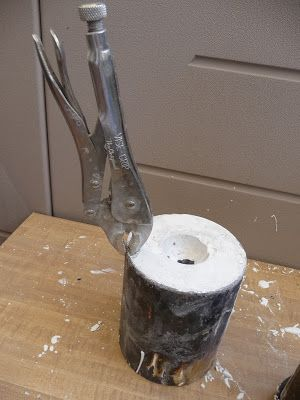
05 — Investment Casting
The wax tree is set inside a steel flask and flooded with a gypsum-bonded investment slurry under vacuum, pulling out every trapped air bubble. Left to cure for hours, it hardens into the exact negative of everything the wax was.
06 — Burnout
The flask climbs through the kiln in stages — past 150°C, then 370°C, on toward 730°C — over several unhurried hours. Every trace of wax melts and burns clean away, leaving a cavity that remembers its shape perfectly.
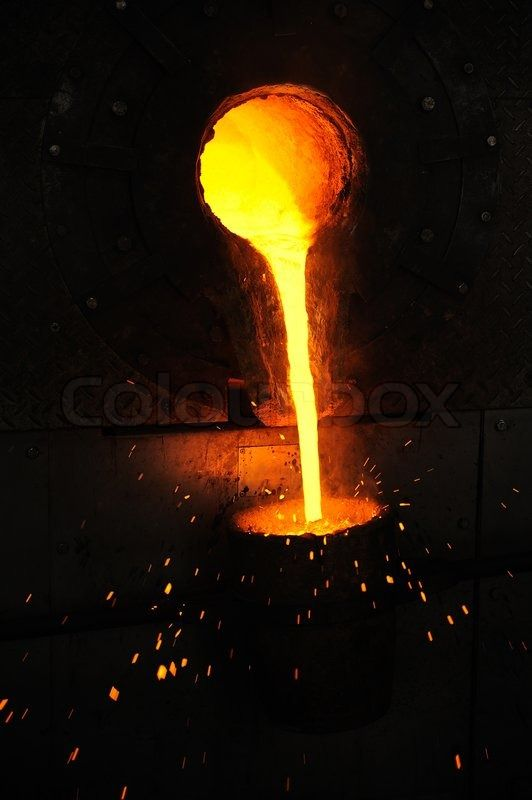
07 — Silver Melting
Sterling silver, alloyed to 92.5% purity for strength, is heated past 890°C until it turns liquid and mirror-bright. Misjudge the heat by even a little and the casting fails — so this step is timed by eye as much as by gauge.
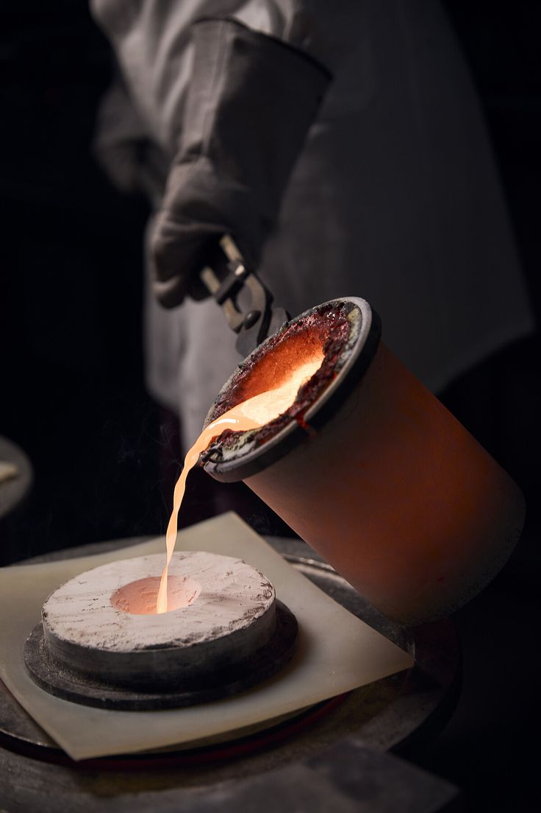
08 — Vacuum Casting
The still-glowing flask is locked onto the caster, and molten silver is pulled in by vacuum or flung in by centrifugal force — reaching every groove the wax once filled before it's given barely a minute to set.
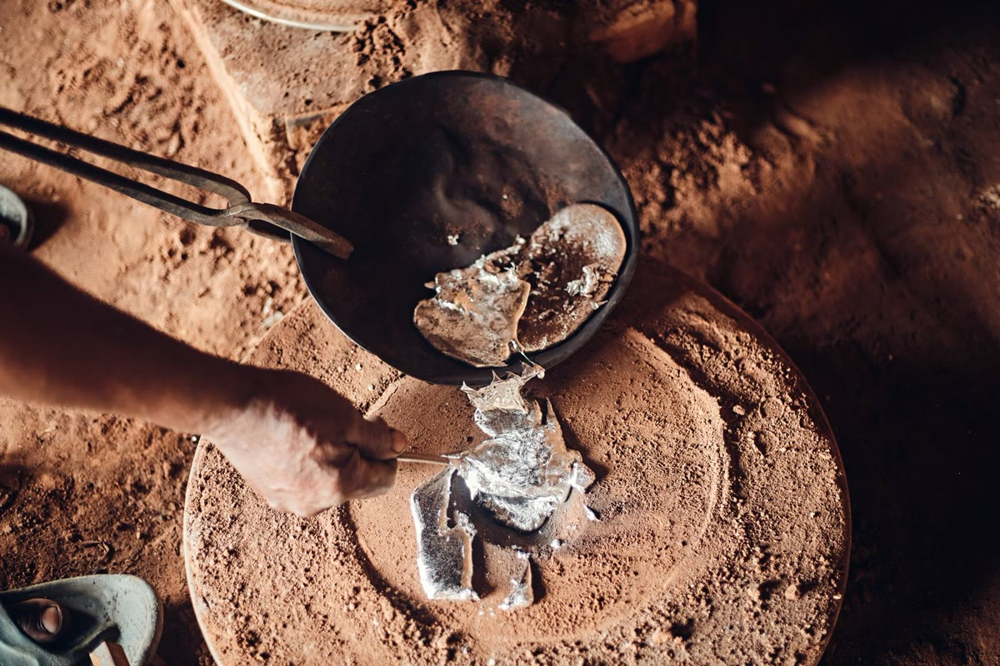
09 — Quenching & Devesting
The flask is plunged into cold water while still hot, and the shock shatters the investment on contact. What comes out is a blackened, unpolished silver tree — rough to look at, but already carrying the design drawn weeks ago.
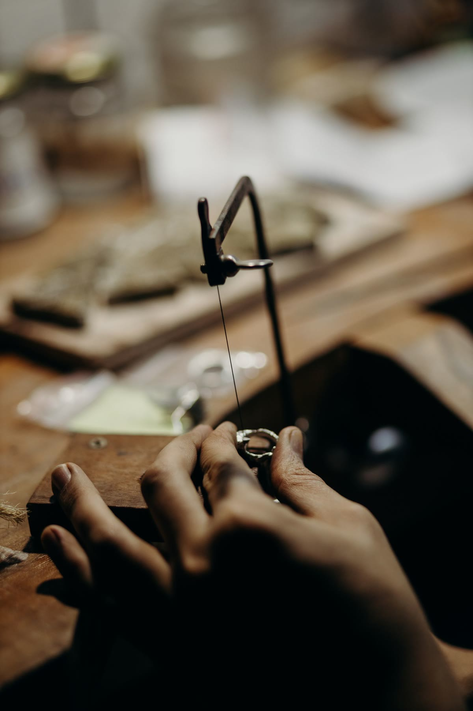
10 — Sprue Cutting
Each piece is cut away from the tree with a jeweller's saw, close enough to the join that almost no silver goes to waste. What's left of the sprue is filed flush by hand — the last trace of the tree it grew from.
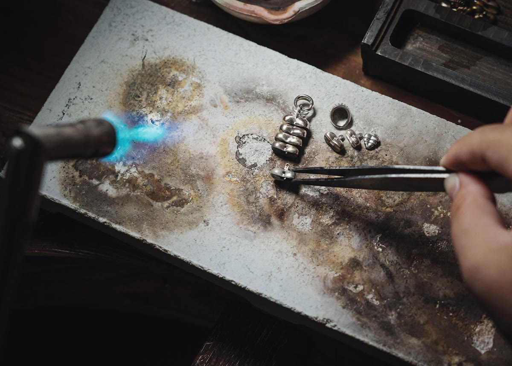
11 — Assembly
Clasps, jump rings, pin backs, and hinges are torch-soldered into place at just enough heat to fuse the joint without touching the metal around it. Loose components stop being parts here and start being jewellery.
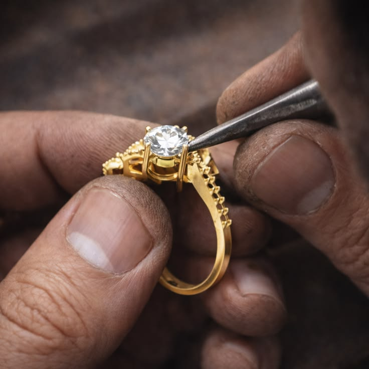
12 — Filing & Fitting
Every hinge is worked open and shut, every clasp clicked, every ring checked against its size gauge. Casting seams are filed away by hand until only smooth metal remains — comfort checked long before shine enters the picture.
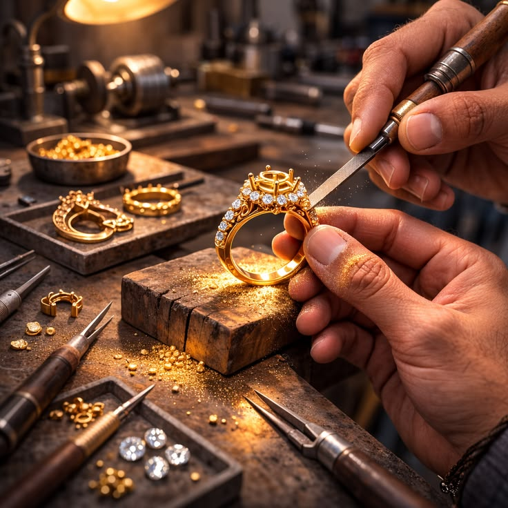
13 — Tumble Finishing
Pieces spend close to an hour tumbling with fine steel pins in a magnetic finisher, reaching into grooves and joints no hand tool can. It won't shine yet — but every surface comes out even, ready for the polish that will.
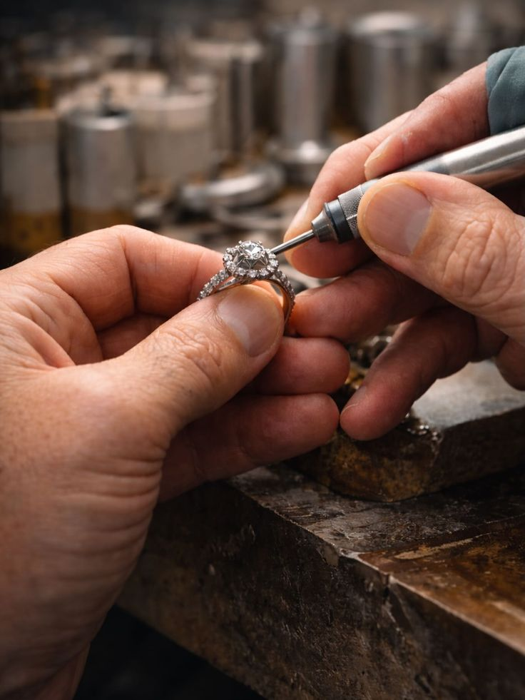
14 — Polishing & Rhodium Plating
Each piece is hand-buffed against cloth mops loaded with polishing compound until it holds a mirror. A final rhodium plating locks that shine in and guards it against tarnish — the last touch before it becomes yours.